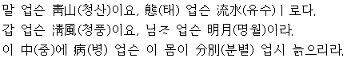

가을 강에 밤이 드니 물결이 차갑구나.
낚시를 들이쳐 놓으니 고기는 물지 않는구나.
욕심이 없는 달빛만 싣고 빈 배를 저어 오는구나
지은이 : 월산대군(月山大君)
갈래 : 평시조
연대 : 조선 성종 때
성격 : 낭만적, 풍류적, 서정적, 전원적, 한정가(閑情歌), 탈속적(脫俗的)
표현 : 영탄법, 역설법, 각운(脚韻)이 있는 것이 특징이다.
제재 : 가을 달밤, 낚시질, 추강
주제 : 가을 달밤의 풍류와 정취
출전 : 청구영언(靑丘永言)
풀이
말이 없는 것은 청산이요, 모양이 없는 것은 유수(흐르는 물)로다
값 없는 것은 바람이요, 주인 없는 것은 밝은 달이로다.
이 아름다운 자연에 묻혀, 병 없는 이 몸은 걱정 없이 늙으리라.
지은이 : 성혼(成渾)
성격 : 풍류적, 전원적, 달관적(達觀的), 한정가(閑情歌)
표현 : 대구법, 의인법, 초장과 중장에서 대구의 묘미를 살렸으며, '업슨'이라는 시어의 반복을 통해 운율적 효과를 높이고 있음.
제재 : 청산, 유수, 청풍, 명월
심상 : 시각적 심상
주제 : 자연을 벗삼는 즐거움 / 강호 한정의 삶을 다짐함
출전 : 화원악보
풀이
십 년을 살면서 초가삼간 지어 냈으니
(그 초가삼간에) 나 한 간, 달 한 간, 맑은 바람 한 간을 맡겨 두고
강산은 들일 곳이 없으니 이대로 둘러 두고 보리라.
지은이 : 송순(宋純)
갈래 : 평시조, 한정가
성격 : 전원적, 관조적, 풍류적, 낭만적, 자연친화적 태도
표현 : 과장법
제재 : 전원 생활
주제 : 자연 귀의(自然歸依), 안빈낙도(安貧樂道)
출전 : 병와가곡집(甁窩歌曲集)
풀이